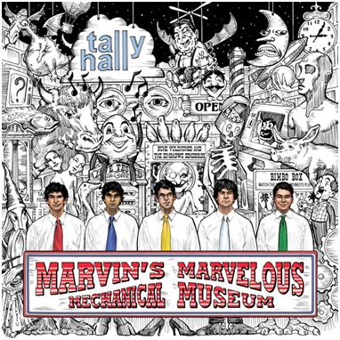

Название «Tally Hall» происходит от его использования в качестве
названия крытого торгового центра на Орчард-Лейк-роуд в
Фармингтон-Хиллз, штат Мичиган . Marvelous Mechanical Museum Марвина ,
аркада, название которой совпадает с названием их дебютного альбома,
остается там, хотя торговый центр изменил названия. Обложка альбома для
Marvelous Mechanical Museum основана на машинах внутри аркады. В 2005
году группа выпустила свой дебютный студийный альбом Marvelous
Mechanical Museum . Скрипач Джереми Киттель написал струны для альбома.
Группа привлекла внимание национальных СМИ, исполнив свою песню "Good
Day" на The Late Late Show с Крейгом Фергюсоном 2 августа 2006 года, а
также появившись в сегменте MTV You Hear It First в сентябре 2006 года.
Группа появилась на шоу 2007 года. Музыкальный фестиваль South by
Southwest Music Festival. 3 августа 2008 года Талли Холл выступал на
сцене BMI в Lollapalooza . 16 сентября 2008 года Tally Hall был
приглашен на шоу The Late Late Show с Крейгом Фергюсоном , чтобы
способствовать запуску Интернет-шоу Tally Hall . Они исполнили "Welcome
to Tally Hall" в новых черных жилетах поверх своих традиционных цветных
галстуков, белых рубашек и черных брюк.